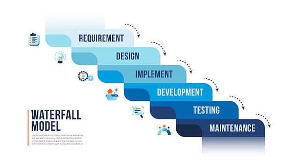
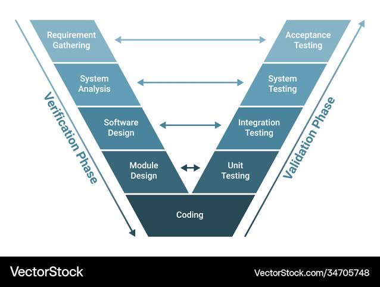
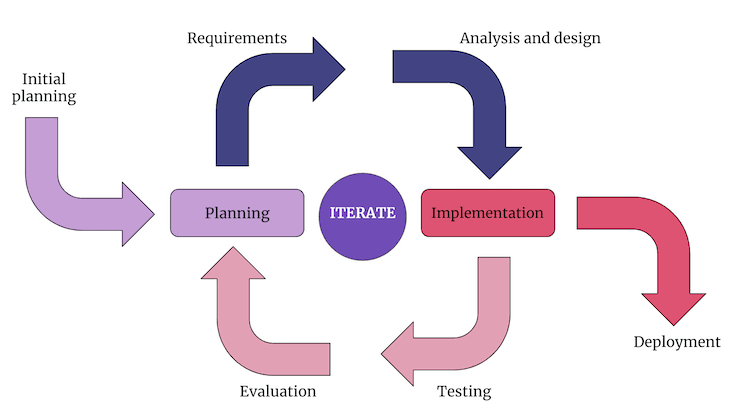

01
01. Requisitos
Relevamiento y documentación formal de requisitos funcionales y no funcionales. Definición de SRS y criterios de aceptación.
El SDLC (Software Development Life Cycle) define la estructura metodológica empleada en la construcción, evaluación, control de calidad y entrega de software robusto dentro de 67 Patrol.
Haz clic o desplázate sobre cada fase para iluminar el flujo secuencial de trabajo:
Relevamiento y documentación formal de requisitos funcionales y no funcionales. Definición de SRS y criterios de aceptación.
Modelado de la arquitectura de software, diagramas UML, esquemas de bases de datos y prototipado de interfaces (UI/UX).
Escritura del código fuente siguiendo buenas prácticas de ingeniería, control de versiones (Git) y revisiones de código.
Ejecución intensiva de pruebas unitarias, de integración, funcionales y de aceptación para garantizar la calidad del software.
Liberación controlada del software en entorno de producción mediante pipelines integrados y monitoreo activo.
Atención a incidencias en producción, aplicación de parches de seguridad y actualización evolutiva de requerimientos.
Diferenciación conceptual crítica para asegurar la máxima calidad del software.
Comprueba que el software cumpla las especificaciones de diseño. Incluye revisiones estáticas de código, inspecciones técnicas y análisis ciclomático.
Garantiza que el software satisface las necesidades reales y expectativas del usuario final mediante pruebas de aceptación y retroalimentación.
Aprende sobre el modelo en cascada, en V y los modelos iterativos e incrementales a través de esquemas gráficos interactivos y bloques comparativos detallados.
Es el enfoque clásico del ciclo de vida del software. Plantea una ejecución estrictamente lineal y secuencial donde cada fase debe completarse y validarse mediante entregables formales antes de iniciar la siguiente.

Evolución directa del modelo en cascada que enfatiza rigurosamente el control de calidad, asociando de forma simétrica cada fase de diseño con su correspondiente etapa de pruebas.

Divide el proyecto en pequeños bloques o incrementos funcionales. En cada iteración se entrega una versión operativa ampliada y refinada del producto.
